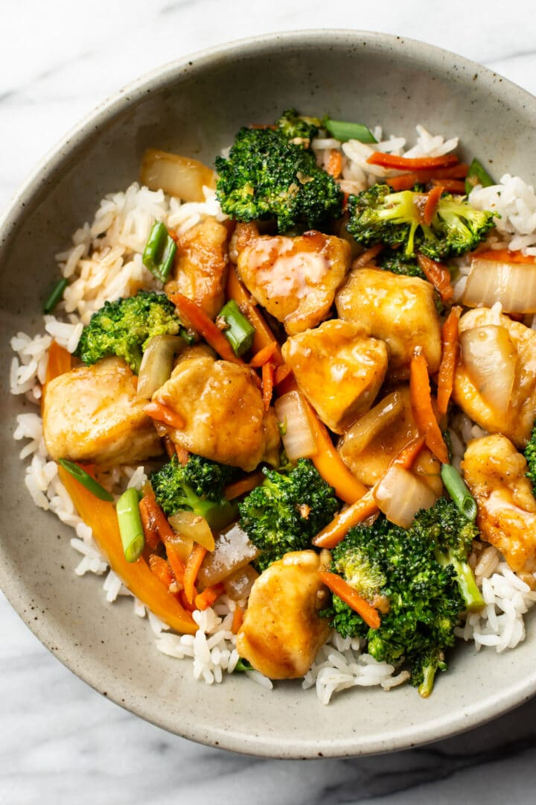

Click here to return to the homepage.
Chicken stir-fry
This dish can be prepared very easily.

Ingredients
- Chicken
- Oil
- (optional) dry flavoring like salt, herbs etc
- (optional) wet flavoring like soy sauce, vinegar, etc
- Vegetables, potatoes, any other add-ons
Steps
- Rub the chicken with dry and perhaps wet flavorings. Leave in the fridge overnight, or, in a pinch, for an hour or so.
- Put the oil in the pan.
- Fry the things that take a while to cook (potatoes, for instance) first. Flavor those with dry flavorings.
- You can put the wet flavorings into the pan now or later depending on if you want them to be a sauce. Depending on how thick you want it, put flour or cornstarch in.
- Once you put the chicken in, things become super time sensitive.
- Put the stuff that cooks super quick, or the stuff that you want to stay crunchy, last.
Click here to return to the homepage.